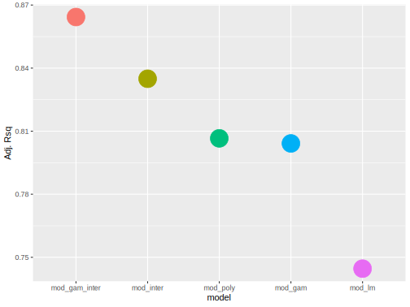
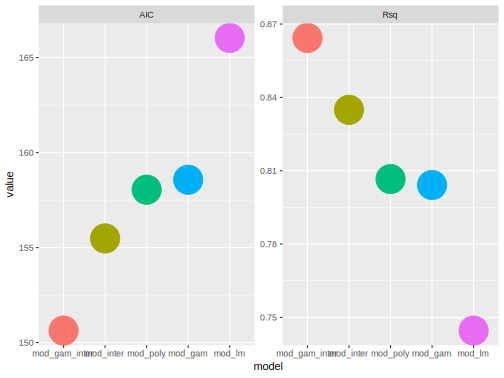

Iterative Programming
Almost everything you do when dealing with data will need to be done again, and again, and again. If you are copy-pasting your way to repetitively do the same thing, you’re not only doing things inefficiently, you’re almost certainly setting yourself up for trouble if practically anything changes about the data or process.
In order to avoid this, you need to be familiar with basic programming, and a starting point is to use iterative programming. Let’s look at the following. Let’s say we want to get the means of some columns in our data set. Do you do something like this?
Now consider what you have to change if you change a variable name, decide to do a median, or the data object name changes. Practically breathing on the data will cause you to have to redo that code, and possibly every line of it.
For loops
A for loop will help us get around the problem. The idea is that we want to perform a particular action for every iteration of some sequence. That sequence may be over columns, rows, lines in a text, whatever. Here is a loop.
What’s going on here? We’ve created an iterative process in which, for every element in c('x','y','z','q'), we are going to do something. We use the completely arbitrary word column as a placeholder to index which of the four columns we’re dealing with at a given point in the process. On the first iteration, column will equal x, on the second y, and so on. We then take the mean of df[,column], which will be df[,'x'], then df[,'y'], etc.
Here is an example with the nycflights data, which regards flights that departed New York City in 2013. The weather data set has columns for things like temperature, humidity, and so forth.21
weather = data.frame(nycflights13::weather)
for (column in c('temp','humid','wind_speed','precip')) {
print(mean(weather[,column], na.rm = TRUE))
}[1] 55.26039
[1] 62.53006
[1] 10.51749
[1] 0.004469079Now if the data name changes, the columns we want change, or we want to calculate something else, we usually end up only changing one thing, rather than at least changing one, and probably many more things. In addition, the amount of code is the same whether the loop goes over 100 columns or 4.
Let’s do things a little differently.
columns = c('temp', 'humid', 'wind_speed', 'precip')
nyc_means = rep(NA, length(columns))
for (i in seq_along(columns)) {
nyc_means[i] = mean(weather[ ,columns[i]], na.rm = TRUE)
}
nyc_means[1] 55.260392127 62.530058972 10.517488384 0.004469079By creating a columns object, if anything changes about the columns we want, that’s the only line in the code that would need to be changed. The i is now a place holder for a number that goes from 1 to the length of columns (i.e. 4). We make an empty nyc_means object that’s the length of the columns, so that each element will eventually be the mean of the corresponding column.
In the following I remove precipitation and add visibility and air pressure.
columns = c('temp', 'humid', 'wind_speed', 'visib', 'pressure')
nyc_means = rep(NA, length(columns))
for (i in seq_along(columns)) {
nyc_means[i] = mean(weather[ ,columns[i]], na.rm = TRUE)
}
nyc_means %>% round(2)[1] 55.26 62.53 10.52 9.26 1017.90Had we been copy-pasting, this would require deleting or commenting out a line in our code, pasting two more, and changing each one after pasting to represent the new columns. That’s tedious, and not a fun way to code.
A slight speed gain
Note that you do not have to create an empty object like we did. The following works also.
columns = c('temp','humid','wind_speed', 'visib', 'pressure')
nyc_means = c()
for (i in seq_along(columns)) {
nyc_means[i] = mean(weather[ ,columns[i]], na.rm = TRUE)
}
nyc_means %>% round(2)[1] 55.26 62.53 10.52 9.26 1017.90However, the other approach is slightly faster, because memory is already allocated for all elements of nyc_means, rather than updating it every iteration of the loop. This speed gain can become noticeable when dealing with thousands of columns and complex operations.
While alternative
When you look at some people’s R code, you may see a loop of a different sort.
columns = c('temp','humid','wind_speed', 'visib', 'pressure')
nyc_means = c()
i = 1
while (i <= length(columns)) {
nyc_means[i] = mean(weather[ ,columns[i]], na.rm = TRUE)
i = i + 1
}
nyc_means %>% round(2)[1] 55.26 62.53 10.52 9.26 1017.90This involves a while statement. It states, while i is less than or equal to the length (number) of columns, compute the value of the ith element of nyc_means as the mean of ith column of weather. After that, increase the value of i. So, we start with i = 1, compute that subsequent mean, i now equals 2, do the process again, and so on. The process will stop as soon as the value of i is greater than the length of columns.
There is zero difference to using the while approach vs. the for loop. While is often used when there is a check to be made, e.g. in modeling functions that have to stop the estimation process at some point, or else they’d go on indefinitely. In that case the while syntax is probably more natural. Either is fine.
(Dots and) Loops
Understanding loops is fundamental toward spending less time processing data and more time toward exploring it. Your code will be more succinct and more able to handle the usual changes that come with dealing with data. Now that you have a sense of it, know that once you are armed with the sorts of things we’ll be talking about next- apply functions, writing functions, and vectorization - you’ll likely have little need to write explicit loops. While there is always a need for iterative processing of data, R provides even more efficient means to do so.
apply family
A family of functions comes with R that allows for a succinct way of looping when it is appropriate. As such, even when you loop in R, you don’t have to do so explicitly. Common functions in this family include:
- apply
- arrays, matrices, data.frames
- lapply, sapply, vapply
- lists, data.frames, vectors
- tapply
- grouped operations (table apply)
- mapply
- multivariate version of sapply
- replicate
- performs an operation N times
As an example we’ll consider standardizing variables, i.e. taking a set of numbers, subtracting the mean, and dividing by the standard deviation. This results in a variable with mean of 0 and standard deviation of 1. Let’s start with a loop approach.
The above would be a really bad way to use R. It goes over each column individually, then over each value of the column.
Conversely, apply will take a matrix or data frame, and apply a function over the margin, row or column, you want to loop over. The first argument is the data you’re considering, the margin is the second argument (1 for rows, 2 for columns22), and the function you want to apply to those rows is the third argument. The following example is much cleaner compared to the loop, and now you’d have a function you can use elsewhere if needed.
stdize <- function(x) {
(x-mean(x)) / sd(x)
}
apply(mydf, 2, stdize) # 1 for rows, 2 for columnwise applicationMany of the other apply functions work similarly, taking an object and a function to do the work on the object (possibly implicit), possibly with other arguments specified if necessary.
Apply functions
It is important to be familiar with and regularly use the apply family for efficient data processing. A summary of benefits includes:
- Cleaner/simpler code
- Environment kept clear of unnecessary objects
- Potentially more reproducible
- more likely to use generalizable functions
- Parallelizable
Note that apply functions are NOT necessarily faster than explicit loops, and if you create an empty object for the loop as discussed previously, the explicit loop will likely be faster. On top of that, functions like replicate and mapply are especially slow.
However, the apply family can ALWAYS potentially be faster than standard R loops do to parallelization. With base R’s parallel package, there are parallel versions of the apply family, e.g.parApply, parLapply etc. As every modern computer has at least four cores to play with, you’ll always potentially have nearly a 4x speedup by using the parallel apply functions.
Apply functions and similar approaches should be a part of your regular R experience. We’ll talk about other options that may have even more benefits, but you need to know the basics of how apply functions work in order to use those.
I use R every day, and very rarely use explicit loops. Note that there is no speed difference for a for loop vs. using while. And if you must use an explicit loop, create an empty object of the dimension/form you need, and then fill it in via the loop. This will be notably faster.
I pretty much never use an explicit double loop, as a little more thinking about the problem will usually provide a more efficient path to solving the problem.
purrr
The purr package allows you to take the apply family approach to the tidyverse.
Consider the following. We’ll use the map function to map the sum function to each element in the list, the same way we would with lapply.
[[1]]
[1] 6
[[2]]
[1] 15
[[3]]
[1] 24The map functions take some getting used to, and in my experience they are typically slower than the apply functions, sometimes notably so. However they allow you stay within the tidy realm, which has its own benefits, and have more control over the nature of the output23, which is especially important in reproducibility, package development, producing production-level code, etc. The key idea is that the map functions will always return something the same length as the input given to it.
The purrr functions want a list or vector, i.e. they don’t work with data.frame objects like we’ve done with mutate and summarize except in the sense that data.frames are lists.
# A tibble: 32 x 11
mpg cyl disp hp drat wt qsec vs am gear carb
<dbl> <dbl> <dbl> <dbl> <dbl> <dbl> <dbl> <dbl> <dbl> <dbl> <dbl>
1 0.151 -0.105 -0.571 -0.535 0.568 -0.610 -0.777 -0.868 1.19 0.424 0.735
2 0.151 -0.105 -0.571 -0.535 0.568 -0.350 -0.464 -0.868 1.19 0.424 0.735
3 0.450 -1.22 -0.990 -0.783 0.474 -0.917 0.426 1.12 1.19 0.424 -1.12
4 0.217 -0.105 0.220 -0.535 -0.966 -0.00230 0.890 1.12 -0.814 -0.932 -1.12
5 -0.231 1.01 1.04 0.413 -0.835 0.228 -0.464 -0.868 -0.814 -0.932 -0.503
6 -0.330 -0.105 -0.0462 -0.608 -1.56 0.248 1.33 1.12 -0.814 -0.932 -1.12
7 -0.961 1.01 1.04 1.43 -0.723 0.361 -1.12 -0.868 -0.814 -0.932 0.735
8 0.715 -1.22 -0.678 -1.24 0.175 -0.0278 1.20 1.12 -0.814 0.424 -0.503
9 0.450 -1.22 -0.726 -0.754 0.605 -0.0687 2.83 1.12 -0.814 0.424 -0.503
10 -0.148 -0.105 -0.509 -0.345 0.605 0.228 0.253 1.12 -0.814 0.424 0.735
# ... with 22 more rows mpg cyl disp hp drat wt qsec vs am gear carb
642.900 198.000 7383.100 4694.000 115.090 102.952 571.160 14.000 13.000 118.000 90.000 diamonds %>%
map_at(c('carat', 'depth', 'price'),
function(x) as.integer(x > median(x))) %>%
as_data_frame()# A tibble: 53,940 x 10
carat cut color clarity depth table price x y z
<int> <ord> <ord> <ord> <int> <dbl> <int> <dbl> <dbl> <dbl>
1 0 Ideal E SI2 0 55 0 3.95 3.98 2.43
2 0 Premium E SI1 0 61 0 3.89 3.84 2.31
3 0 Good E VS1 0 65 0 4.05 4.07 2.31
4 0 Premium I VS2 1 58 0 4.2 4.23 2.63
5 0 Good J SI2 1 58 0 4.34 4.35 2.75
6 0 Very Good J VVS2 1 57 0 3.94 3.96 2.48
7 0 Very Good I VVS1 1 57 0 3.95 3.98 2.47
8 0 Very Good H SI1 1 55 0 4.07 4.11 2.53
9 0 Fair E VS2 1 61 0 3.87 3.78 2.49
10 0 Very Good H VS1 0 61 0 4 4.05 2.39
# ... with 53,930 more rowsHowever, working with lists is very useful, so let’s turn to that.
Working with lists
Aside from data frames, you may think you don’t have much need for list objects. However, list objects make it very easy to iterate some form of data processing.
Let’s say you have models of increasing complexity, and you want to easily summarise and/or compare them.
library(mgcv) # for gam
mtcars$cyl = factor(mtcars$cyl)
mod_lm = lm(mpg ~ wt, data=mtcars)
mod_poly = lm(mpg ~ poly(wt, 2), data=mtcars)
mod_inter = lm(mpg ~ wt*cyl, data=mtcars)
mod_gam = gam(mpg ~ s(wt), data=mtcars)
mod_gam_inter = gam(mpg ~ cyl + s(wt, by=cyl), data=mtcars)
model_list = list(mod_lm = mod_lm,
mod_poly = mod_poly,
mod_inter = mod_inter,
mod_gam = mod_gam,
mod_gam_inter = mod_gam_inter)
# lowest wins
model_list %>%
map_dbl(AIC) %>%
sort()mod_gam_inter mod_inter mod_poly mod_gam mod_lm
150.6324 155.4811 158.0484 158.5717 166.0294 # highest wins
model_list %>%
map_dbl(function(x) if_else(inherits(x, 'gam'),
summary(x)$r.sq,
summary(x)$adj)
) %>%
sort(decreasing = TRUE)mod_gam_inter mod_inter mod_poly mod_gam mod_lm
0.8643020 0.8349382 0.8065828 0.8041651 0.7445939 Let’s go further and create a plot of these results. We’ll map to a data frame, use gather to melt it to two columns of model and value, then use ggplot2 to plot the results24.
model_list %>%
map_df(function(x) if_else(inherits(x, 'gam'),
summary(x)$r.sq,
summary(x)$adj)
) %>%
gather(key = 'model', value = `Adj. Rsq`) %>%
arrange(desc(`Adj. Rsq`)) %>%
mutate(model = factor(model, levels = model)) %>% # sigh
ggplot(aes(x=model, y=`Adj. Rsq`)) +
geom_point(aes(color=model), size=10, show.legend = F)
Why not throw in AIC also?
mod_rsq =
model_list %>%
map_df(function(x) if_else(inherits(x, 'gam'),
summary(x)$r.sq,
summary(x)$adj)
) %>%
gather(key = 'model', value='Rsq')
mod_aic =
map_df(model_list, AIC) %>%
gather(key='model', value='AIC')
left_join(mod_rsq, mod_aic) %>%
arrange(AIC) %>%
mutate(model = factor(model, levels = model)) %>%
gather(key = 'measure', value='value', -model) %>%
ggplot(aes(x=model, y=value)) +
geom_point(aes(color=model), size=10, show.legend = F) +
facet_wrap(~measure, scales = 'free')
List columns
As data.frames are lists, anything can be put into a column just as you would a list element. We’ll use pmap here, as it can take more than one argument, and we’re feeding all columns of the data.frame.
mtcars2 = as.matrix(mtcars)
mtcars2[sample(1:length(mtcars2),50)] = NA
mtcars2 = as_data_frame(mtcars2)
mtcars2 = mtcars2 %>%
mutate(newvar = pmap(., ~ data.frame(
N = sum(!is.na(c(...))),
Miss = sum(is.na(c(...)))
)))Now check out the list column.
# A tibble: 32 x 12
mpg cyl disp hp drat wt qsec vs am gear carb newvar
<chr> <chr> <chr> <chr> <chr> <chr> <chr> <chr> <chr> <chr> <chr> <list>
1 21.0 6 160.0 110 3.90 2.620 16.46 0 1 4 <NA> <data.frame [1 × 2]>
2 21.0 6 160.0 <NA> 3.90 2.875 17.02 0 1 4 4 <data.frame [1 × 2]>
3 <NA> <NA> 108.0 " 93" 3.85 2.320 18.61 1 1 4 <NA> <data.frame [1 × 2]>
4 21.4 6 <NA> 110 <NA> 3.215 19.44 1 0 3 1 <data.frame [1 × 2]>
5 18.7 8 <NA> 175 3.15 3.440 17.02 0 0 <NA> 2 <data.frame [1 × 2]>
6 18.1 6 225.0 105 2.76 3.460 <NA> 1 0 3 1 <data.frame [1 × 2]>
7 <NA> 8 360.0 <NA> <NA> 3.570 <NA> 0 0 <NA> 4 <data.frame [1 × 2]>
8 24.4 4 146.7 " 62" 3.69 3.190 20.00 <NA> <NA> 4 2 <data.frame [1 × 2]>
9 22.8 <NA> 140.8 " 95" 3.92 3.150 22.90 1 0 4 2 <data.frame [1 × 2]>
10 19.2 6 167.6 123 3.92 <NA> 18.30 1 0 4 4 <data.frame [1 × 2]>
# ... with 22 more rows[[1]]
N Miss
1 10 1
[[2]]
N Miss
1 10 1
[[3]]
N Miss
1 8 3Unnest it with the tidyr function.
# A tibble: 32 x 13
mpg cyl disp hp drat wt qsec vs am gear carb N Miss
<chr> <chr> <chr> <chr> <chr> <chr> <chr> <chr> <chr> <chr> <chr> <int> <int>
1 21.0 6 160.0 110 3.90 2.620 16.46 0 1 4 <NA> 10 1
2 21.0 6 160.0 <NA> 3.90 2.875 17.02 0 1 4 4 10 1
3 <NA> <NA> 108.0 " 93" 3.85 2.320 18.61 1 1 4 <NA> 8 3
4 21.4 6 <NA> 110 <NA> 3.215 19.44 1 0 3 1 9 2
5 18.7 8 <NA> 175 3.15 3.440 17.02 0 0 <NA> 2 9 2
6 18.1 6 225.0 105 2.76 3.460 <NA> 1 0 3 1 10 1
7 <NA> 8 360.0 <NA> <NA> 3.570 <NA> 0 0 <NA> 4 6 5
8 24.4 4 146.7 " 62" 3.69 3.190 20.00 <NA> <NA> 4 2 9 2
9 22.8 <NA> 140.8 " 95" 3.92 3.150 22.90 1 0 4 2 10 1
10 19.2 6 167.6 123 3.92 <NA> 18.30 1 0 4 4 10 1
# ... with 22 more rowsThis is a pretty esoteric demonstration, and not something you’d normally want to do, as mutate or other approaches would be far more efficient and sensical. However, the idea is that you might want to retain the information you might otherwise store in a list with the data that was used to create it. Once you have that, you can use that column as you would any list for iterative programming.
Iterative Programming Exercises
Exercise 1
With the following matrix, use apply and the sum function to get row or column sums.
Exercise 2
With the following list, use lapply and sapply and the sum function to get sums for the elements. There is no margin to specify for a list, so just supply the list and the sum function.
Exercise 3
As in the previous example, use a map function to create a data frame of the column means.
sapply is actually just a wrapper for lapply. If you supply the argument simplified=F, it is identical. Otherwise, it attempts to return a vector or matrix.
Note that weather data frame is originally a tbl (tibble) class object, and that loop code won’t work with it unless it’s converted to a real data frame, because tibbles are annoying like that. You would have to do something like
weather %>% pull(column).↩You can have 3 or more dimensional arrays, and apply will work over those dimensions (or any combination of them), but this doesn’t come up too often.↩
Personally I find the help file description nebulous or completely lacking, and the examples unrealistic, and oftentimes can come up with a group_by-summarise approach before I can sort out why the map approach didn’t work.↩
Note that ggplot2 will change the ordering of the variable unless you coerce it by creating a factor. This pretty much defeats the entire purpose of retaining characters over factors everywhere else in the tidyverse.↩